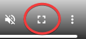

1 Instructions Routine
We start with a blank psyexp1
We then add:
- instructions to the participant about the task and which buttons to press - including an instruction to press space to continue.
- a keyboard component so the participant can press space to continue
During the course, I will show you live in PsychoPy while sharing my screen how to build this up. This website is intended to be used for reference after the course though, so I include a screencast of me building this up in Figure 1.1 below.
Tip
All the screencasts in this document can be viewed full-screen using the standard YouTube-style controls in the bottom-right:

During the course, you should reproduce this partial experiment on your own machine. The best advice is to build it up bit by bit yourself. However I will include links to download partial experiments and complete experiments every now and then in this document. See for example the blue box below. The links will be to zip files which you must extract properly before opening: in Windows right-click on the zip file and do “extract all”, then use the folder that appears without the ‘.zip’ file extension
Download
Click file1 to download the psyexp so far. Notice that these files have fullscreen unticked: you should change this by ticking the fullscreen box for real experiments. I’m only unticking fullscreen so that my screencast software can see the window.
Figure 1.2 is a screencast of PsychoPy running this (partial) experiment on my machine.
‘.psyexp’ is the file extension for a PsychoPy experiment, and in this document we use ‘psyexp’ to refer to PsychoPy experiments in the same way as we use ‘jpeg’ to refer to images with ‘.jpeg’ extensions and so on↩︎